อ่านจบแล้วเล่าได้ว่าแอปทำอะไร มีอะไรบ้าง และพัฒนาด้วยอะไร โดยไม่ต้องรู้เรื่องโค้ด พร้อมบทพูด บทเดโมสด และคำตอบคำถามที่กรรมการน่าจะถาม
| ช่วง | เวลา | ผู้พูด | ใช้ส่วนไหนของคู่มือ |
|---|---|---|---|
| เปิดตัว: ปัญหาเดิม + LabHub คืออะไร | 3 นาที | คนที่ 1 | ส่วน 1 |
| ภาพรวม: 2 ระบบ 3 บทบาท | 2 นาที | คนที่ 1 | ส่วน 2 |
| เดโมฝั่งนักศึกษา: ดูของ สแกนขอยืม ประวัติ | 6 นาที | คนที่ 1 ถือมือถือ | ส่วน 3 + 8 |
| เดโมฝั่งผู้ดูแล: อนุมัติคำขอ แดชบอร์ด | 5 นาที | คนที่ 2 ใช้โน้ตบุ๊ก | ส่วน 4 + 8 |
| ระบบห้องคอม: ผังห้อง แจ้งปัญหา งานซ่อม | 4 นาที | คนที่ 2 | ส่วน 5 |
| พัฒนายังไง ใช้เทคโนโลยีอะไร | 4 นาที | คนที่ 1 | ส่วน 6–7 |
| สรุป + ถาม-ตอบ | 1 นาที + ถามตอบ | ทั้งคู่ | ส่วน 9 |
ถ้ามีเวลา 20 นาที: ตัดช่วงพัฒนาเหลือ 2 นาที และเดโมห้องคอมแค่ผังห้อง · ถ้ามี 30 นาที: เพิ่มเดโมนัดรับ (ส่วน 3) และรายงาน PDF (ส่วน 4)
ทุกคนเข้าระบบด้วยบัญชี Google ของ มข. (นักศึกษา @kkumail.com · อาจารย์/บุคลากร @kku.ac.th) เข้าครั้งแรกระบบสร้างบัญชีให้เอง ไม่ต้องสมัครสมาชิก
| บทบาท | คือใคร | ทำอะไรได้ |
|---|---|---|
| นักศึกษา (user) | ผู้ใช้ทั่วไป รวมถึงอาจารย์ที่ยังไม่ได้รับสิทธิ์ | ดูของว่าง · ขอยืม/คืน/ยืมต่อ · นัดรับ · ดูประวัติของตัวเอง · ดูผังห้องคอม · แจ้งปัญหาเครื่อง |
| TA (ผู้ช่วย) | ผู้ช่วยดูแลห้อง ที่ Admin แต่งตั้ง | อนุมัติ/ปฏิเสธคำขอ · ตรวจสภาพตอนคืน · นัดเวลารับของ · ดูประวัติ/รายงาน · พิมพ์ป้าย QR · เปลี่ยนสถานะเครื่องคอม · งานซ่อม · ตรวจประจำเทอม |
| ผู้ดูแลระบบ (admin) | เจ้าของห้องแล็บ | ทุกอย่างของ TA + เพิ่ม/แก้/จำหน่ายอุปกรณ์ · หมวดหมู่ · นำเข้า CSV · ตั้งค่ากติกา · แต่งตั้ง TA/Admin · เพิ่มห้อง/เครื่อง/LAN |
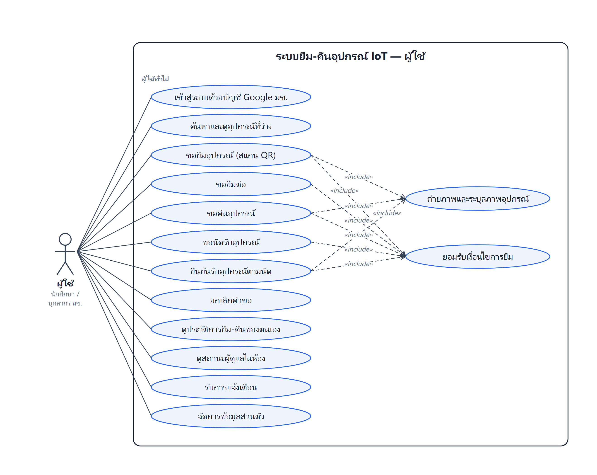
อีก 2 แผนภาพ (ฝั่งผู้ดูแล และระบบห้องคอม) อยู่ที่ docs/diagrams/ พร้อม ER Diagram และพจนานุกรมข้อมูลสำหรับรายงาน
ตอนคืนก็แบบเดียวกัน: สแกน QR ชิ้นที่ยืม → กด "ขอคืนอุปกรณ์" → ถ่ายรูป + บอกสภาพ → ผู้ดูแลตรวจรับ
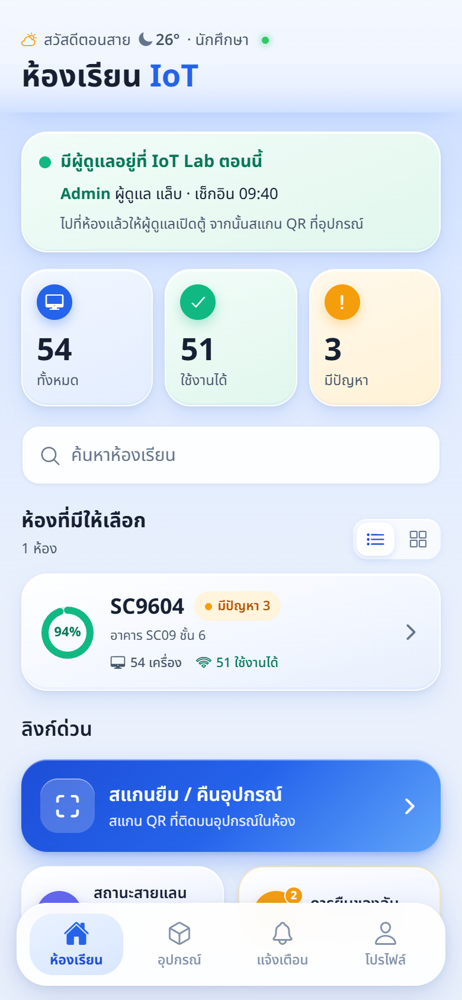
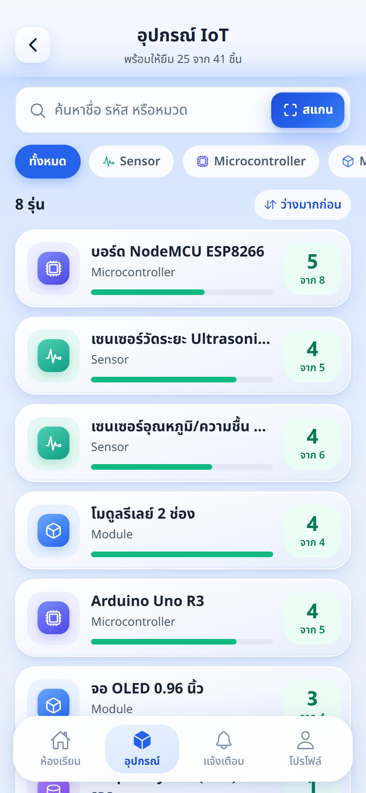
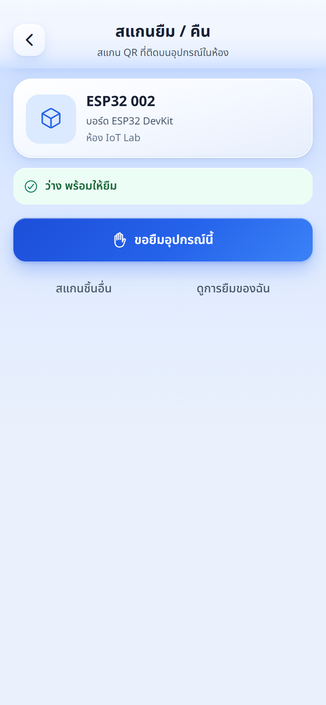
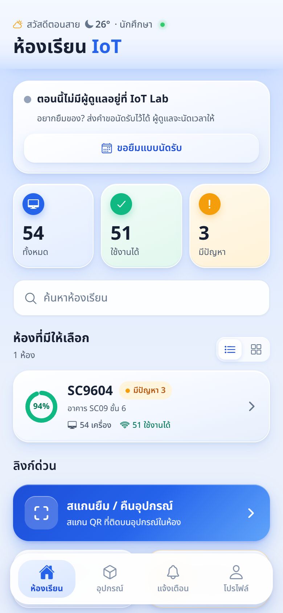
การยืมต้องมีผู้ดูแลเปิดตู้ให้ ถ้าตอนนี้ไม่มีใครอยู่ นักศึกษาฝากคำขอนัดรับไว้ได้:
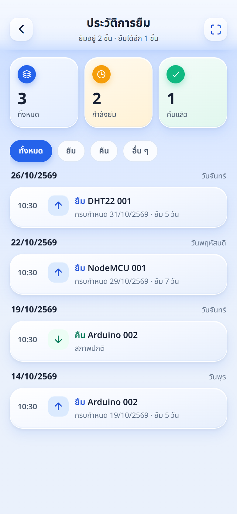
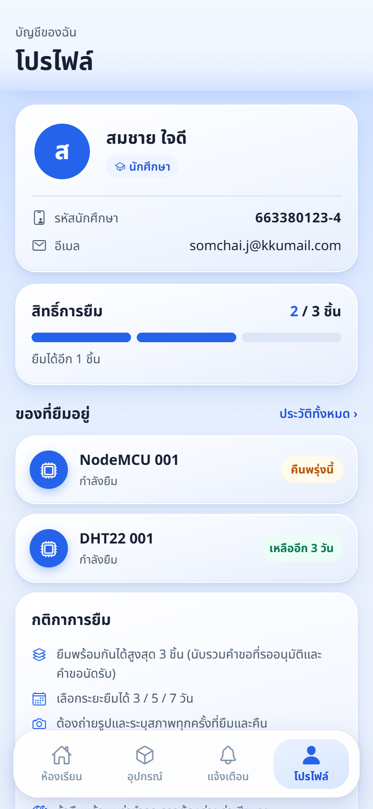
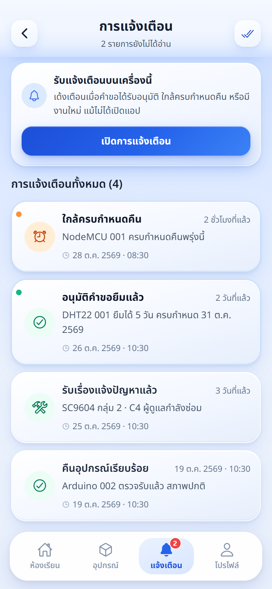
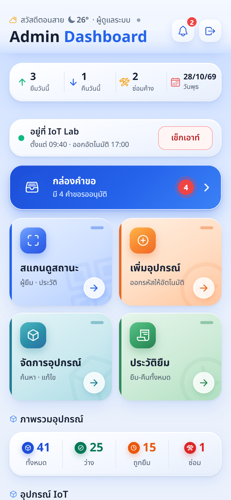
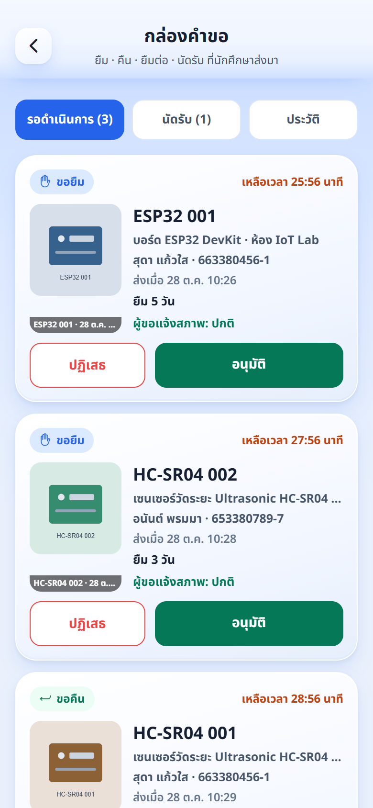
เปิดเว็บบนคอม (จอกว้าง) หน้าผู้ดูแลจะเปลี่ยนเป็นแบบมีเมนูซ้าย ตาราง และหลายคอลัมน์ ทำงานได้ครบเหมือนมือถือทุกอย่าง แค่จัดหน้าใหม่ให้เหมาะกับจอใหญ่
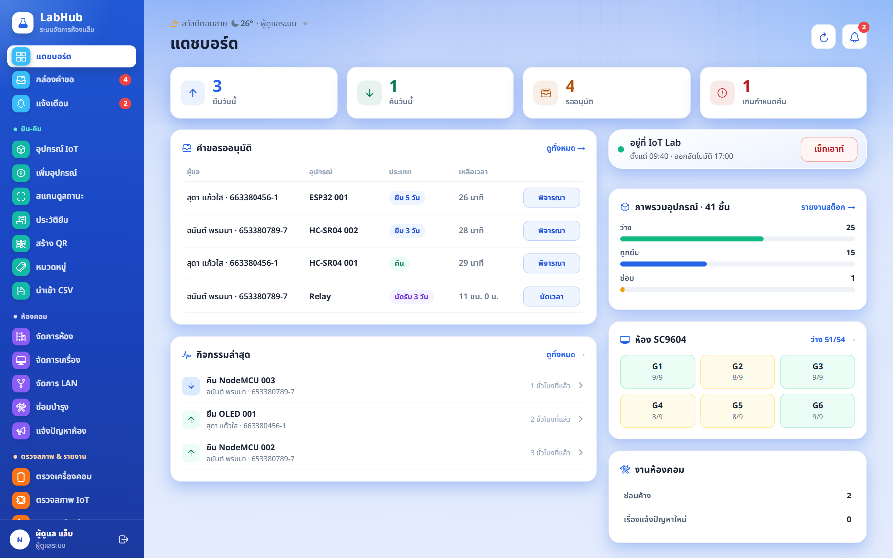
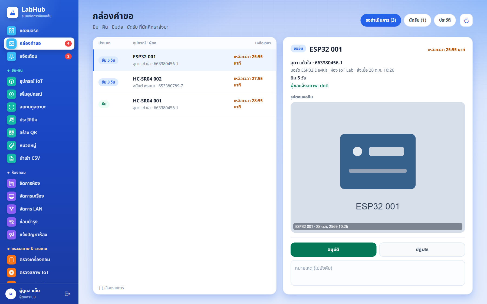
สีม่วง = TA ใช้ได้ด้วย · สีส้ม = Admin เท่านั้น
ห้องคอม 1 ห้อง แบ่งเป็น 6 กลุ่ม แต่ละกลุ่มมีคอม 9 เครื่อง (C1–C9) และตู้ Server ที่มีช่องสาย LAN 12 ช่อง (รวม 54 เครื่อง 72 ช่อง LAN) Admin เพิ่มห้องใหม่ได้ในแอป
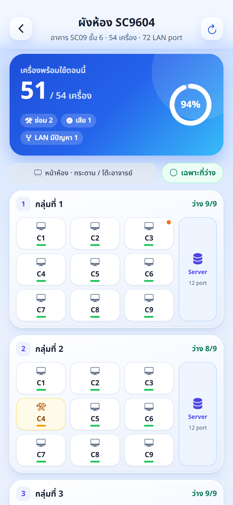
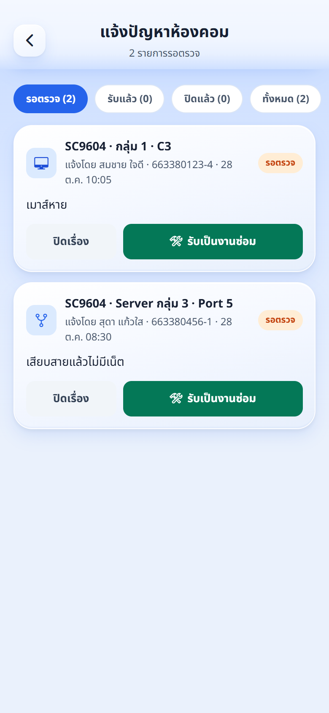
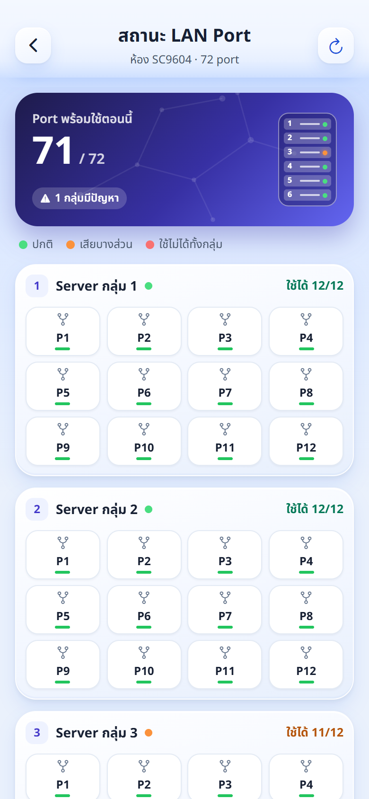
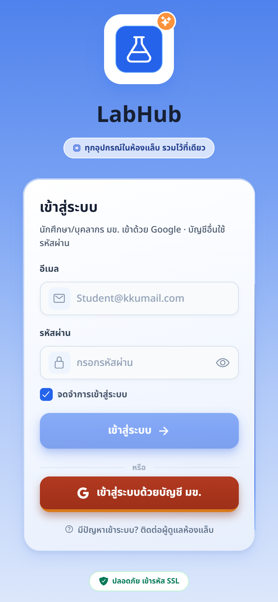
| เครื่องมือ | ใช้ทำอะไร |
|---|---|
| React Native + Expo | ชุดเครื่องมือสร้างแอป เขียนโค้ดชุดเดียวได้ทั้ง iPhone, Android และเว็บ ไม่ต้องเขียน 3 รอบ เหมือนแม่พิมพ์เดียว ปั๊มขนมได้ 3 แบบ |
| TypeScript | ภาษาที่ใช้เขียนแอป (JavaScript ที่ตรวจความถูกต้องเข้มขึ้น) ช่วยจับข้อผิดพลาดตั้งแต่ตอนเขียน |
| Expo Router | ระบบเปลี่ยนหน้าในแอป แต่ละหน้าคือไฟล์หนึ่งไฟล์ |
| Supabase | หลังบ้านสำเร็จรูป มีครบในที่เดียว:
· ฐานข้อมูล PostgreSQL เก็บข้อมูลเป็นตาราง (23 ตาราง เช่น อุปกรณ์ การยืม ผู้ใช้ ห้อง เครื่องคอม) · Auth ระบบล็อกอิน (Google มข.) · Storage เก็บรูปอุปกรณ์และรูปหลักฐานยืม-คืน · Realtime ส่งสัญญาณให้หน้าจออัปเดตเองทันที · งานตามเวลา (cron) ทำงานอัตโนมัติ เช่น ตัดคำขอหมดอายุ เตือน 08:00 เช็กเอาท์ 17:00 · Edge Function โปรแกรมเล็ก ๆ บนเซิร์ฟเวอร์ ใช้ส่งแจ้งเตือนเด้ง เหมือนเช่าออฟฟิศที่มีตู้เก็บเอกสาร รปภ. และพนักงานส่งของพร้อม |
| Google Sign-In | เข้าระบบด้วยบัญชีมหาวิทยาลัย ไม่ต้องเก็บรหัสผ่านนักศึกษาเอง |
| Vercel | ที่ฝากเว็บไซต์ (labhub-kku.vercel.app) แก้โค้ดแล้วเว็บอัปเดตเอง |
| PWA + Web Push | ทำให้เว็บติดตั้งเป็นไอคอนบนมือถือได้ และเด้งแจ้งเตือนได้ |
| GitHub | ที่เก็บโค้ดออนไลน์ ทุกการแก้ไขมีประวัติย้อนดูได้ (มากกว่า 190 ครั้ง) ทำงานร่วมกันผ่าน Pull Request |
| ช่วงเวลา (2569) | สิ่งที่ทำ |
|---|---|
| มีนาคม | เริ่มโปรเจกต์ (17 มี.ค.) · ทดลองใช้ฐานข้อมูล MongoDB แล้วเปลี่ยนมาใช้ Supabase เพราะมีระบบล็อกอิน เก็บรูป และอัปเดตสดในตัว · หน้าจัดการอุปกรณ์ |
| พฤษภาคม | ระบบสแกน QR · ออกแบบหน้าตาใหม่ทั้งแอป (ธีมฟ้า) |
| ต้นตุลาคม | ยืม-คืนเฟสแรกเสร็จ (2 ต.ค.) · บทบาท TA · ระบบห้องคอมครบ: ผังห้อง ประวัติสถานะ เช็กลิสต์ แจ้งปัญหา · รหัสนักศึกษา |
| 10–11 ต.ค. | ฟีเจอร์ตามคำแนะนำอาจารย์ F1–F4: ป๊อปอัปกฎการยืม · ประวัติแบบแอปธนาคาร · เช็กอินผู้ดูแล · ขอยืมแบบนัดรับ |
| 12–19 ต.ค. | หน้าเข้าสู่ระบบใหม่ (Google มข.) · เว็บติดตั้งเป็นแอป + แจ้งเตือนเด้ง · หน้าผู้ดูแลแบบจอใหญ่ · ชุดทดสอบ 53 ข้อ · ระบบสำรองข้อมูล |
| 22–28 ต.ค. | รองรับบุคลากร มข. (@kku.ac.th) · ปรับความปลอดภัยเพิ่ม · จัดระเบียบโค้ดทั้งโปรเจกต์ · ทำแผนภาพประกอบรายงาน |
| รายการ | |
|---|---|
| มือถือ 1 เครื่อง ล็อกอินบัญชีนักศึกษาทดสอบ (กรอกรหัสนักศึกษาแล้ว) ติดตั้งแอปหรือเว็บไว้บนหน้าจอโฮม และอนุญาตกล้องแล้ว | |
| โน้ตบุ๊ก เปิด labhub-kku.vercel.app ล็อกอินบัญชี TA หรือ Admin (คนละบัญชีกับมือถือ เพราะอนุมัติคำขอของตัวเองไม่ได้) ต่อจอโปรเจกเตอร์ | |
| อุปกรณ์ทดสอบ 1 ชิ้นที่ติดป้าย QR สถานะ "ว่าง" (จดรหัส 4 ตัวบนป้ายไว้ เผื่อสแกนไม่ติด) | |
| บัญชีนักศึกษาทดสอบยืมค้างไม่ถึง 3 ชิ้น (ไม่งั้นปุ่มขอยืมกดไม่ได้) | |
| เปิดแอปเล่นสักครั้งในวันก่อนนำเสนอ (หลังบ้านแพ็กเกจฟรีจะหลับถ้าไม่มีคนใช้นานราว 7 วัน) | |
| เน็ตมือถือสำรอง (เปิดฮอตสปอต) เผื่อ Wi-Fi ห้องนำเสนอมีปัญหา | |
| แผนสำรอง: อัดวิดีโอหน้าจอเดโมเก็บไว้ 1 รอบ + ใช้ภาพในคู่มือนี้ |
| # | ทำอะไร | พูดอะไร |
|---|---|---|
| 1 | คนที่ 1 โชว์หน้าแรกบนมือถือ (ต่อจอหรือถือให้กล้องจับ) | "นี่คือหน้าแรกของนักศึกษา เห็นว่าตอนนี้มีผู้ดูแลอยู่ห้องไหม และสถานะห้องคอม" |
| 2 | คนที่ 2 กด "เช็กอิน" บนแดชบอร์ดโน้ตบุ๊ก | "ผู้ดูแลมาถึงห้องกดเช็กอิน" → ให้ดูมือถือ แถบเปลี่ยนเป็นสีเขียวเองทันที ถ้าปุ่มขึ้นว่า "เช็กเอาท์" แปลว่าเช็กอินค้างไว้ ให้กดเช็กเอาท์ก่อนเริ่มนำเสนอ |
| 3 | คนที่ 1 แท็บอุปกรณ์ → ค้นหาชื่ออุปกรณ์ทดสอบ | "เช็กได้ก่อนว่าของที่อยากยืมเหลือกี่ชิ้น" |
| 4 | กดสแกน → สแกน QR บนอุปกรณ์ทดสอบ | "ทุกชิ้นมีป้าย QR สแกนแล้วรู้ทันทีว่าชิ้นนี้ว่าง" |
| 5 | ขอยืมอุปกรณ์นี้ → 3 วัน → สภาพปกติ → ถ่ายรูป → ติ๊กยอมรับกฎ → ส่ง | "ต้องถ่ายรูปสดทุกครั้งเป็นหลักฐาน และต้องยอมรับกฎก่อนส่ง" |
| 6 | คนที่ 2 ชี้ที่โน้ตบุ๊ก คำขอเด้งขึ้นในกล่องคำขอ → เปิดดูรูป → อนุมัติ | "คำขอขึ้นมาเองไม่ต้องรีเฟรช ผู้ดูแลเห็นรูปและชื่อนักศึกษา กดอนุมัติ" |
| 7 | คนที่ 1 เปิดแจ้งเตือน → ประวัติการยืม | "นักศึกษาได้แจ้งเตือนทันที และเห็นในประวัติ พร้อมวันครบกำหนดคืน" |
| 8 | สแกนชิ้นเดิมอีกครั้ง → ขอคืน → ถ่ายรูป → ส่ง · คนที่ 2 รับคืน | "ตอนคืนก็ถ่ายรูปเหมือนกัน ผู้ดูแลเทียบรูปก่อน-หลังได้" |
| 9 | คนที่ 2 เปิดผังห้องคอม → ชี้สีเครื่อง | "ระบบที่สอง ห้องคอม เห็นทุกเครื่องว่าใช้ได้หรือเสีย" |
| 10 | คนที่ 1 แตะเครื่องหนึ่งบนมือถือ → แจ้งปัญหา "ทดสอบระบบ" · คนที่ 2 เปิดคิวแจ้งปัญหา → ปิดเรื่องพร้อมเหตุผล "ทดสอบระหว่างนำเสนอ" | "นักศึกษาแจ้งปัญหาได้ทันที เรื่องเข้าคิวผู้ดูแล รับเป็นงานซ่อมหรือปิดเรื่องพร้อมเหตุผลได้" |
| 11 | คนที่ 2 (ถ้ามีเวลา) รายงานยืม-คืน → ส่งออก PDF | "ผู้ดูแลออกรายงานส่งอาจารย์ได้ในคลิกเดียว" |
ไม่ต้องเขียนโค้ดเป็น แค่รู้ว่าโค้ดอยู่ตรงไหน และอ่านออกทีละบรรทัดก็พอ ส่วนนี้เรียงจากง่ายไปยาก:
| โฟลเดอร์ | เก็บอะไร |
|---|---|
app/ | หน้าจอ 1 ไฟล์ = 1 หน้า ชื่อไฟล์ = ที่อยู่หน้า เช่น app/scan.tsx = หน้าสแกน · app/admin/ = หน้าของผู้ดูแล |
components/ | ชิ้นส่วนหน้าจอที่ใช้ซ้ำ เช่น ปุ่ม การ์ด แถบล่าง (borrow/ = ของระบบยืม · room/ = ของระบบห้องคอม) |
lib/ | ตัวช่วย เช่น ชื่อ/สีสถานะ สิทธิ์ของแต่ละบทบาท |
supabase/migrations/ | ฐานข้อมูล + กติกา เขียนด้วยภาษา SQL (ตาราง กฎสิทธิ์ และฟังก์ชันที่ตัดสินว่ายืมได้ไหม) |
// (ฝั่งแอป) หรือ -- (ฝั่ง SQL) คือคอมเมนต์ โค้ดโปรเจกต์นี้เขียนคอมเมนต์เป็นภาษาไทยเกือบทุกไฟล์ อ่านตรงนั้นก่อนจะรู้ว่าท่อนนั้นทำอะไร · if = ถ้า · return = ส่งคำตอบกลับ · raise exception = ปฏิเสธพร้อมข้อความโค้ด 1 บรรทัด ≈ 1 ประโยคคำสั่ง อ่านจากซ้ายไปขวา เครื่องหมาย ; ท้ายบรรทัด = จบประโยค
หน้านี้สอนเฉพาะรูปแบบ (syntax) และ method ที่โผล่ใน 3 รูปถัดไป ทุกตัวมีเลขบรรทัดให้ชี้ตามได้ ไม่ต้องจำหมด เปิดหน้านี้ค้างไว้ข้าง ๆ ตอนอ่านโค้ดก็ได้
| หน้าตา | อ่านว่า | ตัวอย่างจริง | เทียบกับ |
|---|---|---|---|
| const ชื่อ = ค่า | ตั้งชื่อให้ค่านี้ (เรียกว่าตัวแปร) | บรรทัด 362 const max = … | แปะป้ายชื่อบนกล่อง |
| "ข้อความ" | ข้อความตรง ๆ | บรรทัด 380 "borrow" | คำในเครื่องหมายคำพูด |
| `…${ค่า}…` | ข้อความที่เติมค่าลงไป | บรรทัด 206 `ส่งคำ${…} ${item.item_code} แล้ว` | แบบฟอร์มที่เว้นช่องให้เติม |
| ก.ข | "ข ของ ก" (จุด = ของ) | บรรทัด 362 lookup.max_active_borrows = เพดานยืมของผลสแกน | "ชื่อ ของ นักศึกษา" |
| { ชื่อ: ค่า, … } | กล่องข้อมูลหลายช่อง (object) | บรรทัด 195 { p_item_id: item.id, p_days: days, … } | ใบฟอร์มที่มีหลายช่อง |
| ก[ข] | เปิดลิ้นชัก ก ที่ป้าย ข | บรรทัด 206 KIND_TH[mode] = คำไทยของโหมดนี้ เช่น borrow → "ขอยืม" | พจนานุกรม เปิดหาคำ |
| ชื่อ(…) | สั่งให้ทำงาน ของในวงเล็บ = ของที่ยื่นให้ | บรรทัด 192 uploadBorrowPhoto(photoUri) = สั่งอัปโหลด ยื่นรูปให้ | สั่งงานพร้อมยื่นเอกสาร |
| () => … | "เมื่อถูกเรียก ให้ทำ…" | บรรทัด 380 onPress={() => openForm("borrow")} = เมื่อกด ให้เปิดฟอร์มยืม | โน้ตแปะ "ถ้ามีคนกด ให้ทำสิ่งนี้" |
| if (…) … | ถ้า … ให้ทำ … | บรรทัด 202 if (error) throw error; | "ถ้าฝนตก ให้พกร่ม" |
| await | รอให้เสร็จก่อนค่อยไปบรรทัดถัดไป | บรรทัด 192 รออัปโหลดรูปเสร็จ | รอคิวโอนเงินผ่านก่อน |
| try {…} catch {…} throw | ลองทำ ถ้าพังไปทำใน catch · throw = โยนปัญหาออกไป | บรรทัด 202 throw → กระโดดไปบรรทัด 208 catch | แผนสำรอง |
| <ชื่อ ค่า={…}> … </ชื่อ> | ชิ้นส่วนบนหน้าจอ (เขียนคล้าย HTML) · ค่า={…} = ตั้งค่าให้ชิ้นนั้น | บรรทัด 378–386 ปุ่ม <TouchableOpacity disabled={atLimit}> ข้างในมีไอคอนกับตัวหนังสือ | ตัวต่อเลโก้ ชิ้นซ้อนชิ้น |
Method (หรือ function) = คำสั่งสำเร็จรูปที่มีชื่อ เรียกชื่อแล้วตามด้วย ( ) มันก็ทำงานให้ เหมือนกดปุ่มไมโครเวฟ "อุ่นข้าว" ไม่ต้องรู้ว่าข้างในทำงานยังไง รู้แค่ว่ากดแล้วได้อะไร
supabase.rpc = คำสั่ง rpc ของ supabase (มาจากเครื่องมือภายนอก)openForm = ทีมเขียนเอง หาที่มาได้โดยค้น const openForm หรือ function openForm| method | ทำอะไร | เจอที่บรรทัด | เขียนไว้ที่ไหน |
|---|---|---|---|
| supabase.rpc("ชื่อ", {…}) | โทรหาหลังบ้าน เรียกบริการตามชื่อ พร้อมแนบฟอร์มข้อมูล | 194, 197 | เครื่องมือ Supabase |
| uploadBorrowPhoto(รูป) | ย่อรูปเหลือด้านยาว 1600px แล้วอัปโหลด ได้ที่อยู่รูปกลับมา | 192 | lib/borrowPhotos.ts |
| openForm("borrow") | เปิดฟอร์ม ล้างค่าเก่า แล้วตั้งจำนวนวันเริ่มต้นให้ | 380 | app/scan.tsx บรรทัด 155 |
| runLookup(รหัส) | ค้นชิ้นนี้ใหม่ ถามหลังบ้านว่าตอนนี้สถานะอะไร | 207 | app/scan.tsx บรรทัด 103 |
| notify("หัวข้อ", "ข้อความ") | เด้งป๊อปอัปที่มีปุ่ม "โอเค" | 210 | lib/notify.tsx |
| setConfirmOpen(false) | เปลี่ยนค่าที่หน้าจอจำไว้ → ปิดหน้าต่างยืนยัน | 203, 209 | ชื่อที่ขึ้นต้นด้วย set = เปลี่ยนค่าที่จอจำไว้ แล้วจอวาดใหม่เอง (จับคู่กันที่บรรทัด 78 เป็นต้นไป) |
| setJustSent(ข้อความ) | ตั้งข้อความ "ส่งคำขอ … แล้ว" ให้ขึ้นบนจอ | 204 | |
| ข้อความ.trim() | ตัดช่องว่างหัวท้ายข้อความ (พิมพ์แต่เว้นวรรค = ถือว่ายังไม่ได้เขียน) | 175 | มีมากับภาษาเลย |
วิธีนี้ใช้ได้กับทุกบรรทัด: หั่นเป็นชิ้น → แปลทีละชิ้น → อ่านรวมเป็นประโยคไทย
const atLimit = activeCount !== null && activeCount >= max;
| const atLimit = | ตั้งชื่อว่า "ถึงเพดาน" ให้เท่ากับ… |
| activeCount !== null | จำนวนที่ยืมอยู่ ไม่ใช่ค่าว่าง (รู้ตัวเลขแล้ว) |
| && | และ |
| activeCount >= max | จำนวนที่ยืมอยู่ มากกว่าหรือเท่ากับ เพดาน |
const photoPath = await uploadBorrowPhoto(photoUri);
| const photoPath = | ตั้งชื่อว่า "ที่อยู่รูป" ให้เท่ากับ… |
| await | รอให้เสร็จก่อน |
| uploadBorrowPhoto(…) | สั่งอัปโหลดรูปหลักฐานการยืม |
| photoUri | ยื่นรูปที่เพิ่งถ่ายให้ |
? await supabase.rpc("request_borrow", { p_item_id: item.id, p_days: days, … })| ? | ถ้าเงื่อนไขข้างหน้าใช่ (กำลังยืม) ให้ทำส่วนนี้ |
| await | รอให้เสร็จ |
| supabase.rpc(…) | โทรหาหลังบ้าน |
| "request_borrow" | ขอบริการชื่อ "ขอยืม" |
| { p_item_id: item.id, … } | แนบฟอร์ม: ช่องรหัสอุปกรณ์ = id ของ ชิ้นนี้, ช่องจำนวนวัน = วันที่เลือก … |
ถ้าอาจารย์เปิดโค้ดท่อนที่ไม่มีคอมเมนต์ภาษาไทยให้ดู ให้ใช้ 3 ท่อนนี้ซ้อมก่อน ทั้ง 3 ท่อนอยู่ในไฟล์เดียวกัน คือ app/scan.tsx (หน้าสแกนยืม-คืนที่จะเดโม) เรียงตามลำดับที่ผู้ใช้กด เป็นโค้ดจริงไม่แก้ไข เลขบรรทัดตรงกับไฟล์ ณ วันที่ 29 ต.ค. 2569
iot-lab-management → app → scan.tsx · หรือกดปุ่ม t บนหน้า repo แล้วพิมพ์ scan.tsx (ถ้า repo เป็นแบบส่วนตัว ต้องล็อกอินบัญชีที่มีสิทธิ์ก่อน)iot-lab-management → กด Ctrl+P พิมพ์ scan.tsx → Enter → กด Ctrl+G พิมพ์เลขบรรทัด เช่น 171 → EnteratLimit, formReady, request_borrow ก็เจอเหมือนกันatLimit = ถึงเพดาน · formReady = ฟอร์มพร้อม · photoUri = รูป · condition = สภาพ · submit = ส่ง · ตัวที่ขึ้นต้นด้วย set = เปลี่ยนค่าให้หน้าจออัปเดต| สัญลักษณ์ | อ่านว่า | สัญลักษณ์ | อ่านว่า |
|---|---|---|---|
| === | เท่ากับ | && | และ (ต้องจริงทุกข้อ) |
| !== | ไม่เท่ากับ | || | หรือ (จริงข้อเดียวก็พอ) |
| >= | มากกว่าหรือเท่ากับ | ! | ไม่ · !! = "มีค่าแล้วไหม" |
| A ? B : C | ถ้า A ใช่ ใช้ B ไม่งั้นใช้ C | ?? | ถ้าไม่มีค่า ใช้ค่านี้แทน |
| await | รอให้เสร็จก่อน | try / catch | ลองทำ ถ้าพลาดไปทำใน catch |
362const max = lookup.max_active_borrows ?? 3; 363const atLimit = activeCount !== null && activeCount >= max; ⋮ 378<TouchableOpacity 379 style={[s.primaryBtn, atLimit && { opacity: 0.45 }]} 380 onPress={() => openForm("borrow")} 381 disabled={atLimit}382 activeOpacity={0.85} 383> 384 <Ionicons name="hand-left-outline" size={18} color="#fff" /> 385 <Text style={s.primaryBtnText}>ขอยืมอุปกรณ์นี้</Text>386</TouchableOpacity>
| 385 | เจอภาษาไทย "ขอยืมอุปกรณ์นี้" = นี่คือปุ่มขอยืมในหน้าสแกน · บรรทัด 384 คือไอคอนรูปมือบนปุ่ม |
| 378–386 | TouchableOpacity = "ของที่แตะได้" ก็คือตัวปุ่ม ทุกอย่างระหว่าง <TouchableOpacity ถึง </TouchableOpacity> คือของที่อยู่บนปุ่ม |
| 362 | max = เพดานจำนวนยืม เอามาจากหลังบ้าน ถ้าไม่มีค่าใช้ 3 (??) |
| 363 | atLimit (ถึงเพดานไหม) = รู้จำนวนที่ยืมอยู่แล้ว และ จำนวนนั้น ≥ เพดาน |
| 381 | disabled={atLimit} = ถ้าถึงเพดาน ปุ่มกดไม่ได้ · บรรทัด 379 ทำให้ปุ่มจางเหลือ 45% |
| 380 | onPress = กดแล้วทำอะไร → เปิดฟอร์มยืม |
171const needsEvidence = mode === "borrow" || mode === "return" || mode === "claim"; 172const formReady = 173 !!mode && 174 (mode === "return" || !!days) && 175 (!needsEvidence || (!!condition && !!photoUri && (condition === "good" || !!note.trim())));
| 171 | needsEvidence (ต้องมีหลักฐานไหม) = ใช่ ถ้ากำลังยืม หรือคืน หรือรับของตามนัด (ยืมต่อไม่ต้องถ่ายรูป) |
| 172 | formReady (ฟอร์มพร้อมส่งไหม) = ต้องผ่านครบ 3 ข้อ ต่อด้วย && |
| 173 | ข้อ 1: เลือกแล้วว่าจะทำอะไร (ยืม/คืน/ยืมต่อ) |
| 174 | ข้อ 2: เป็นการคืน หรือ เลือกจำนวนวันแล้ว (คืนไม่ต้องเลือกวัน) |
| 175 | ข้อ 3: ไม่ต้องมีหลักฐาน หรือ (เลือกสภาพแล้ว และ ถ่ายรูปแล้ว และ (สภาพปกติ หรือ เขียนหมายเหตุแล้ว)) |
โค้ดที่ใช้ค่านี้: บรรทัด 535 disabled={!formReady || submitting} = ปุ่มส่งกดไม่ได้ถ้าฟอร์มยังไม่พร้อม หรือกำลังส่งอยู่ (กันกดซ้ำ)
191} else { 192 const photoPath = await uploadBorrowPhoto(photoUri); 193 ({ error } = mode === "borrow" 194 ? await supabase.rpc("request_borrow", {195 p_item_id: item.id, p_days: days, p_condition: condition, p_note: note, p_photo_path: photoPath, 196 }) 197 : await supabase.rpc("request_return", { 198 p_item_id: item.id, p_condition: condition, p_note: note, p_photo_path: photoPath, 199 })); 200} 201 202if (error) throw error;203setConfirmOpen(false); 204setJustSent(mode === "claim" 205 ? `รับ ${item.item_code} ตามนัดแล้ว บันทึกการยืมเรียบร้อย` 206 : `ส่งคำ${KIND_TH[mode]} ${item.item_code} แล้ว รอผู้ดูแลอนุมัติ`); 207await runLookup(item.id); 208} catch (e: any) { 209 setConfirmOpen(false); 210 notify("ส่งคำขอไม่สำเร็จ", e.message || "กรุณาลองใหม่อีกครั้ง");
| 192 | อัปโหลดรูปก่อน (await = รอจนเสร็จ) ได้ที่อยู่ของรูปกลับมา |
| 193–199 | ถ้ากำลังยืม (?) → ส่ง request_borrow · ไม่งั้น (:) คือคืน → ส่ง request_return · ส่งไปแค่ ชิ้นไหน กี่วัน สภาพ หมายเหตุ รูป |
| 202 | ถ้าหลังบ้านตอบว่ามีปัญหา (เช่น ยืมครบ 3 ชิ้น) → กระโดดไปที่ catch บรรทัด 208 |
| 204–206 | สำเร็จ → ขึ้นข้อความ "ส่งคำขอยืม … แล้ว รอผู้ดูแลอนุมัติ" · ${...} = เอาค่ามาเติมในข้อความ เช่น รหัสอุปกรณ์ |
| 207 | สแกนชิ้นเดิมซ้ำให้เอง หน้าจอจะเปลี่ยนเป็น "รออนุมัติ" |
| 208–210 | พลาด → เด้งป๊อปอัป "ส่งคำขอไม่สำเร็จ" พร้อมเหตุผลที่หลังบ้านส่งมา |
อ่านเพิ่มถ้ามีเวลา 4 ท่อนนี้เป็นโค้ดจริงเหมือนกัน (ตัดบางบรรทัดให้สั้น และเติมคอมเมนต์ไทยเพื่ออธิบาย) ท่อนเสริม 1–2 เป็นภาษา SQL ฝั่งหลังบ้าน ใช้กติกาเดียวกับที่สอนใน 10.1 คือ if … raise exception = ถ้า … ให้ปฏิเสธ
v_max := public._setting_int('max_active_borrows', 3); -- เพดาน (ค่าในหน้าตั้งค่า ถ้าไม่มีใช้ 3) v_active := public._active_borrow_count(v_uid); -- คนนี้ยืม/รออยู่กี่ชิ้น if v_active >= v_max then raise exception 'ยืมพร้อมกันได้สูงสุด % ชิ้น ...', v_max, v_active; end if;
if v_today >= 5 then raise exception 'วันนี้แจ้งครบ 5 ครั้งแล้ว ลองใหม่พรุ่งนี้ หรือแจ้งผู้ดูแลในห้อง'; end if;
if (ถ้า) … raise exception (ปฏิเสธ)export const ITEM_STATUS = { available: { label: "ว่าง", color: "#16a34a", ... }, // เขียว borrowed: { label: "ถูกยืม", color: "#b45309", ... }, // ส้ม repair: { label: "ซ่อมบำรุง", color: "#dc2626", ... }, // แดง };
lib/room/roomStatus.ts)function canAccess(role, path) { if (role === "admin") return true; // Admin เข้าได้ทุกหน้า if (role !== "ta") return false; // นักศึกษาเข้าหน้าผู้ดูแลไม่ได้ return TA_ROUTES.has(path); // TA เข้าได้เฉพาะหน้าที่อยู่ในรายชื่อ }
TA_ROUTES ส่วนสิทธิ์จริงฐานข้อมูลตรวจซ้ำอีกชั้น"| คำ | ความหมายแบบง่าย |
|---|---|
| Frontend / หน้าบ้าน | ส่วนที่ผู้ใช้เห็นและกด (ตัวแอป) |
| Backend / หลังบ้าน | ส่วนที่เก็บข้อมูลและประมวลผลอยู่บนเซิร์ฟเวอร์ ผู้ใช้มองไม่เห็น |
| Database / ฐานข้อมูล | ที่เก็บข้อมูลเป็นตาราง คล้าย Excel หลายแผ่นที่เชื่อมกัน |
| Table / ตาราง | ข้อมูลเรื่องเดียวกัน เช่น ตารางอุปกรณ์ ตารางการยืม |
| API / RPC | "ช่องบริการ" ที่แอปเรียกให้หลังบ้านทำงาน เช่น request_borrow = ส่งคำขอยืม |
| RLS (Row Level Security) | กฎสิทธิ์รายแถว ใครเห็น/แก้ข้อมูลแถวไหนได้ |
| Authentication / Auth | การยืนยันตัวตน (ล็อกอิน) |
| Realtime | ข้อมูลอัปเดตบนจอทันทีโดยไม่ต้องรีเฟรช |
| Cron job | งานที่ตั้งเวลาให้ระบบทำเองซ้ำ ๆ เช่น ทุกวัน 08:00 |
| PWA | เว็บที่ติดตั้งเป็นไอคอนบนมือถือและทำงานเหมือนแอป |
| Push Notification | แจ้งเตือนที่เด้งขึ้นบนเครื่อง แม้ไม่ได้เปิดแอป |
| Deploy | เอาโค้ดเวอร์ชันใหม่ขึ้นไปให้ผู้ใช้ใช้จริง |
| Git / GitHub / Commit / Pull Request | ระบบเก็บประวัติโค้ด · commit = บันทึกการแก้ 1 ครั้ง · Pull Request = ขอรวมงานเข้าโค้ดหลัก |
| Use Case Diagram | แผนภาพว่าผู้ใช้แต่ละบทบาททำอะไรกับระบบได้บ้าง |
| ER Diagram | แผนภาพตารางในฐานข้อมูล และตารางไหนเชื่อมกับตารางไหน |
| Mockup | แบบร่างหน้าจอ ทำให้ดูก่อนเขียนโค้ดจริง |